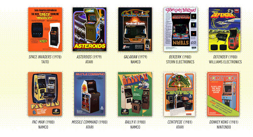

In the 70's, Pong was made. Usually considered the first game, games really progressed since then. Atari and Namco seemed to really be the big players for arcade games. Another notable game, Donkey Kong, came out in the 80's, from Nintendo. Pac-Man also came around in the 80s.

The 80's actually had some really cool game beginnings. One of my favorite game series started in this time! In this time, the NES was launched in North America. We also got games like Super Mario Bros with that, developed by obviously, Nintendo.
In my opinion, the 90's were the most influental years for video games ever. Games like DOOM and Quake popularized the FPS trend, and you might be able to say that DOOM is the reason so many games nowadays even exist. Like Halo, for example. This is just something I find very interesting. FPS games are the biggest genre of games, so I thought it should be mentioned how they really had their beginnings. Sure, there were some games like that before DOOM, but this game reaaaalllly had some stuff that put it more into a spotlight than others. Because of stuff like DOOM and Mortal Kombat, the ESRB ratings came around, and many people at the time started using video games as a scapegoat for bad things happening. Saying that they were the devil's games, and such. Funnily enough, you're literally killing demons in DOOM. Other controversies happened with that game specifically, which gave games their negative reputations at the time. The whole Columbine incident, well, the shooters played that game. And therefore, the media at the time really tried to paint a negative light of all games. Luckily, games kept pushing foward, and they're still around now to give millions in the world enjoyment and even careers! Everything 2000's and after should already be known, so I won't mention most of it. We got stuff like the Playstation, Xbox, Gamecube, and many more cool things.